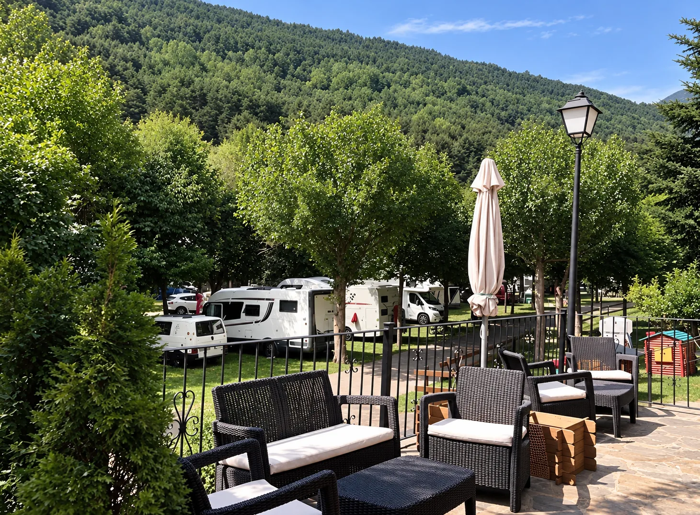
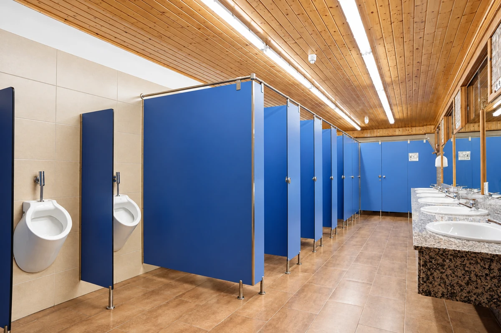
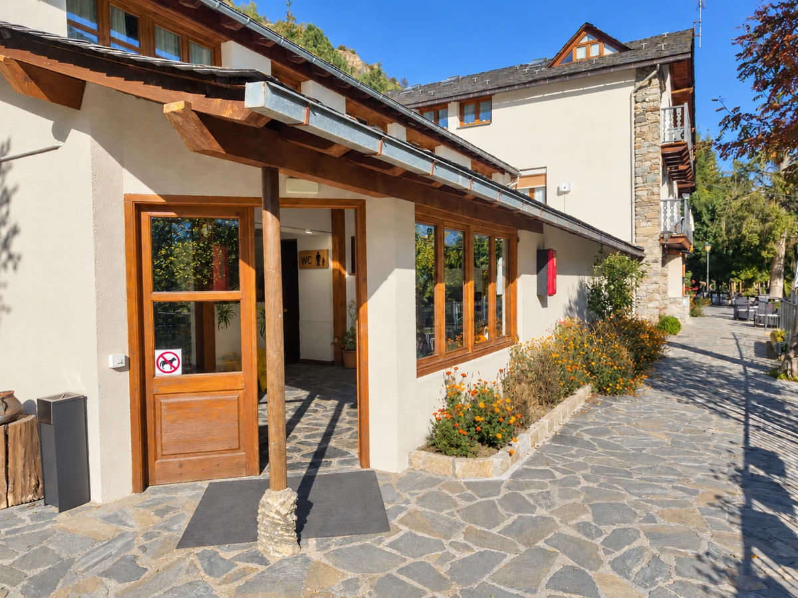
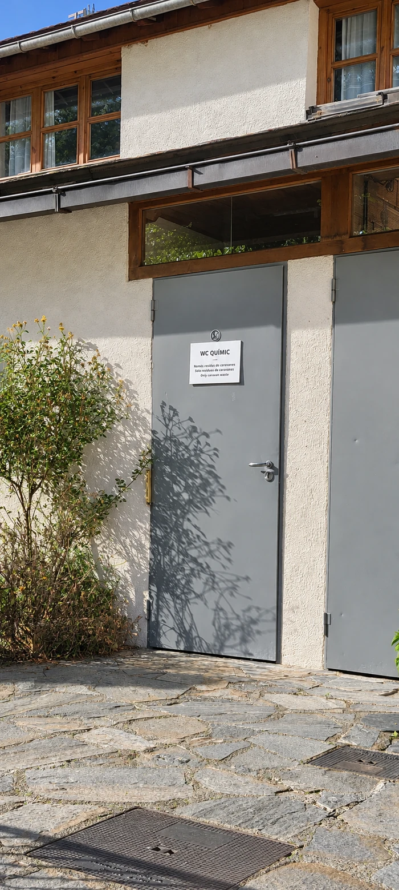
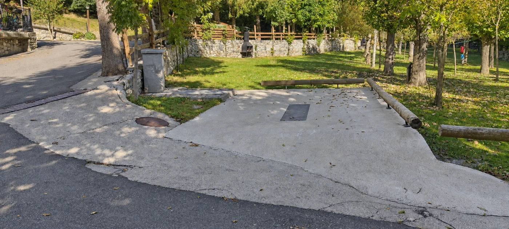
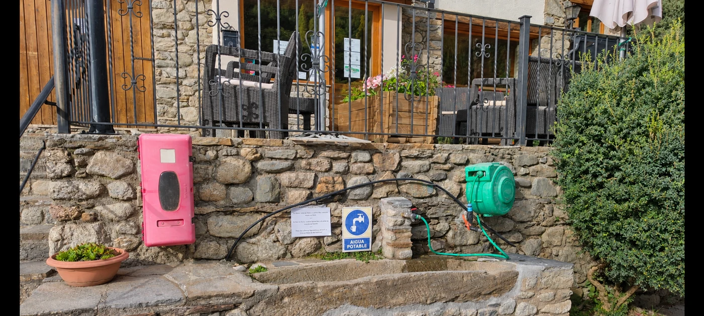

ESPOT · PARQUE NACIONAL DE AIGÜESTORTES · PIRINEOS
Área de autocaravanas en EspotTu camper,
en plena
montaña.
Fuera de temporada, Càmping La Mola funciona como área de autocaravanas en Espot, junto al Parque Nacional de Aigüestortes i Estany de Sant Maurici. Un lugar tranquilo para pernoctar entre árboles, con baños y duchas de agua caliente, vaciado de aguas y check-in online de 9:00 a 22:00h sin esperas.
A tu aire, también fuera de temporada.

DURANTE TU ESTANCIA
Lo esencial, aquí.
Pernocta con tu autocaravana o camper y utiliza
los servicios habilitados en el área.





Fuera de temporada ofrecemos los servicios específicos de área de autocaravanas (pernocta, sanitarios con duchas y zona de aguas). Las instalaciones de verano como restaurante o piscina permanecen cerradas.
ASÍ DE SENCILLO
Llegar y quedarse.
Gestiona tu entrada desde el móvil el mismo día de tu llegada, de 9:00 a 22:00h. No se admiten reservas.
-
Haz el check-in online
Pulsa el botón «Hacer check-in online» para empezar. Registra los datos de los ocupantes y realiza el pago seguro. Puedes hacerlo antes de llegar o al llegar, escaneando el QR de la puerta de recepción.
-
Consulta las indicaciones
Recibe al instante las claves de acceso y las pautas para tu estancia en el camping.
-
Instálate y disfruta
Elige tu plaza entre los árboles, conecta con la naturaleza y utiliza los servicios del área.
RESOLVEMOS TUS DUDAS
Preguntas frecuentes.
Todo lo que necesitas saber antes de llegar con tu autocaravana o camper.
¿Cómo funciona el área de autocaravanas fuera de temporada?
Fuera de temporada, Càmping La Mola funciona exclusivamente como área camper. El proceso es 100% autónomo: puedes hacer el check-in online desde el móvil el mismo día de tu llegada, de 9:00 a 22:00h, y acceder directamente a las parcelas y servicios sin pasar por recepción física.
¿A qué distancia estamos del Parque Nacional de Aigüestortes y Espot Esquí?
Estamos en una ubicación inmejorable: a solo 5 minutos (menos de 2 km) del pueblo de Espot, punto de partida de las rutas de senderismo y de los taxis 4x4 hacia el Lago San Mauricio (Estany de Sant Maurici). Además, la estación de esquí de Espot Esquí se encuentra a escasos 10 minutos en coche.
¿Qué servicios están incluidos con la pernocta?
La tarifa de pernocta incluye el estacionamiento del vehículo, el uso de las instalaciones sanitarias cubiertas (duchas con agua caliente y baños), el uso de la plataforma pavimentada para vaciado de aguas grises, vaciado higiénico de WC químico (aguas negras) y toma de recarga de agua potable.
¿Se puede reservar con antelación?
No, no se puede reservar. El check-in es para el mismo día de la llegada, de 9:00 a 22:00h, y puedes hacerlo online antes de llegar o al llegar, escaneando con tu móvil el QR de la puerta de recepción.
¿Qué tipos de vehículos pueden entrar?
El área está habilitada para furgonetas camper, autocaravanas de cualquier tamaño y longitud, y vehículos con caravana. Los viales internos y la zona de desagües están pensados para facilitar la maniobrabilidad de vehículos grandes.
NOS ENCONTRARÁS EN
Espot, entre montañas.
Ctra. d’Espot LV-5004, km 5
25597 Espot · Lleida
GPS: 42.56893, 1.11117
Cómo llegar en Google Maps (abre Google Maps en una pestaña nueva)